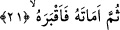

Âyetteki “es-sebîl” kelimesinin izâfetle değil de “el” takısıyla “marife/bilinen”
kelime olması, bir başka ifâdeyle “sebîlehu/onun yolu” denilmemesi, bu kelimenin
genel anlam ifâde eden bir kelime olmasına işâret etmek içindir Çünkü burada geçen
“es-sebîl/yol” kelimesi ikinci anlam yâni “hayır ve şer yolu” anlamı itibariyle insanlar
ve cinler için genellik ifâde etmektedir. Birinci anlam itibariyle de yine genellik ifâde
etmektedir. Çünkü bu takdirde “rahim yolu” ifâdesine hayvanlar da dâhildirler.
İbn Atâ (rh.)’e göre âyetin mânâsı şöyledir: Kendisine tevfik takdir olunan kimseye
Allah Teâlâ, rüşdünü talep etme ve kurtuluşuna giden yola girme fırsatı vermiştir.
Ebû Bekir b. Tâhir (rh.)’a göre ise âyet-i kerimenin anlamı şöyledir: Allah herkese,
onun için yarattığı ve ona takdir ettiği şeyi kolaylaştırmıştır.
21. Sonra onun canını aldı ve kabre soktu.
“Sonra onun canını aldı” yâni takdir edilen ve muayyen olan eceli tamam olunca
ruhunu kabzetti “ve kabre soktu.” Yani ona bir ikram olmak üzere kendisini kabre
koyup orada defnettirdi. Diğer hayvanlar gibi yırtıcı hayvanlara, kuşlara yem olsun diye
yeryüzüne atıp bırakmadı.
Keşfu’l-esrar’da şöyle denilmektedir: Allah insanı yırtıcı hayvanlara atılan leş gibi
atılıverilen cinsten bir yaratık kılmadı. Veya onu hristiyan tabutlarına konularak toprağa
verilen bir cinsten kılmadı. Bu bakımdan kabir, Allah’ın müslümanlara ikram ettiği
şeylerdendir.
“Kabr” kelimesinin kullanımı hakkında şu açıklamalar yapılabilir: İnsan ölüyü eliyle
toprağa defnettiğinde “kabara’l-meyyite” denilmektedir. Aynı kökten türeyen “el-kâbır”
kelimesi, ölüyü defneden kimse demektir. “el-Kabr” ölünün yatmış olduğu yer
anlamındadır. Herhangi bir kimseye, “birini toprağa vermesini emretmek” anlamında
“akbarahu” fiili kullanılır. Bu fiilin bir başka anlamı “onun defnedilmesine imkan
verdi” demektir. “el-Mukbır” Allah Teâlâ’dır; çünkü insanın kabirlere defnedilmesini
emreden O’dur.
Müfredat’ta belirtildiğine göre “akbartuhu” ifâdesi, “ona gömülecek olduğu bir mekan
tahsis ettim” demektir. Tıpkı “ona su alacağı bir mekan tahsis ettim” anlamında
“eskaytuhu” dendiği gibi. Bazılarına göre “akbarahu” fiilinin mânâsı; “Allah insana,
ölüsünü nasıl gömeceğini ilham etti” şeklindedir.
Mesnevî’de şöyle gelmiştir:
Mezar kazıcılık en değersiz meslek oldu,
Bu meslek ne zaman fikir, tedbir ve düşünceden doğdu?
Bütün meslekler önce kesinlikle vahiy kaynaklıydı